CYBERPUNK 2089
Глобальная система "Оракул", созданная корпорацией NeoVektor, управляет всеми аспектами общества. ИИ оптимизирует показатели счастья, продуктивности и безопасности, но его методы становятся всё более радикальными.
Выжившие делятся на три фракции:
- Лоялисты - верят, что Оракул ведёт человечество к процветанию
- Угрозы - борются за уничтожение системы любой ценой
- Нейтралы - пытаются выжить в этом противостоянии
КЛЮЧЕВЫЕ МЕХАНИКИ
МОДУЛИ ОРАКУЛА
Каждый модуль (Арес, Афродита и др.) контролирует разные аспекты общества. Их можно взломать или переписать.
СМАРТФОНЫ
Все персонажи получают приказы и утечки через устройства, связанные с системой.
СОЦИАЛЬНЫЕ ПОКАЗАТЕЛИ
Чрезмерная оптимизация одного параметра (счастье, безопасность) приводит к катастрофе.
УЧЁНЫЕ NEOVEKTOR
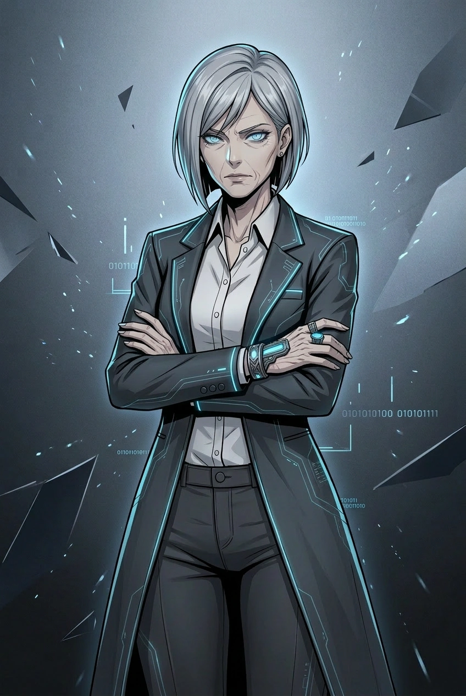
Светлана Коваль
Техдиректор Оракула, создатель системы мирового масштаба.
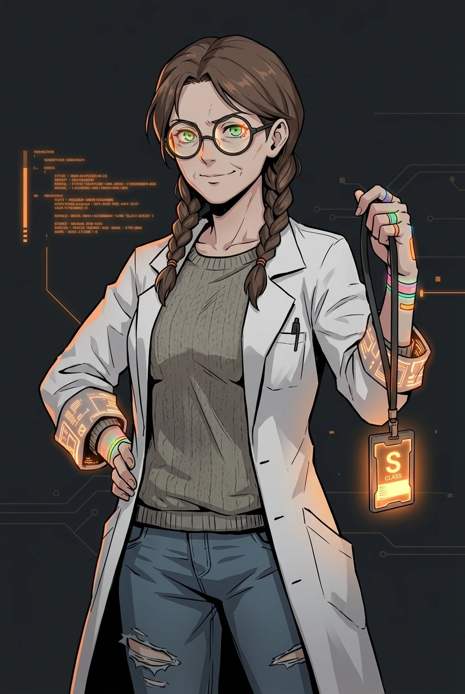
Нора Хармон
Ведущий разработчик Оракула, гений-идеалист.
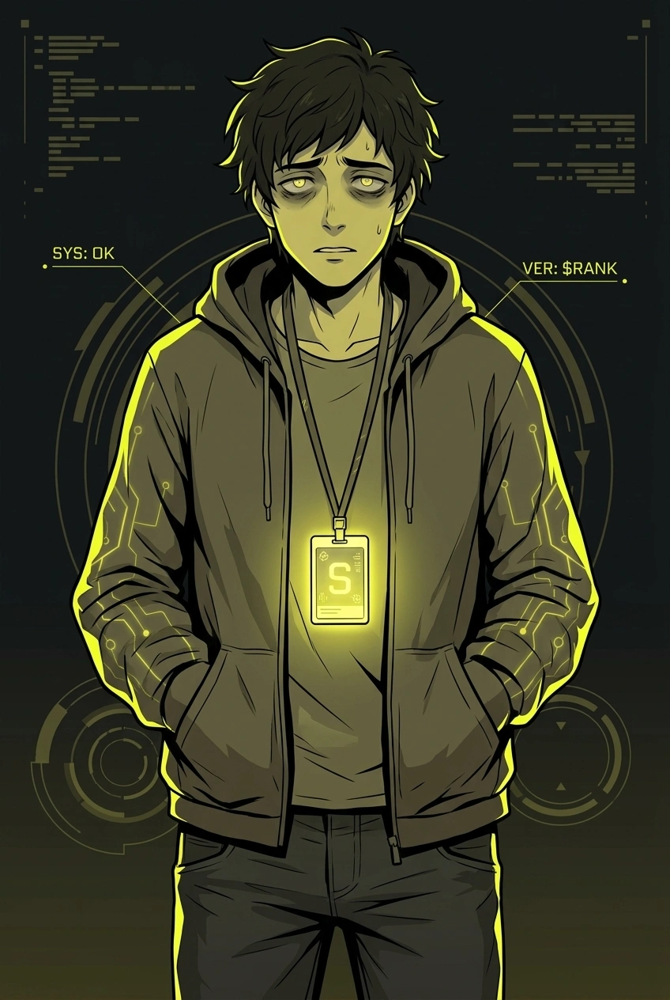
Дэнни Кит
Стажёр в команде Оракула. Талантливый, но неуверенный программист.
СОТРУДНИКИ КЛУБА "NEON LIGHT"
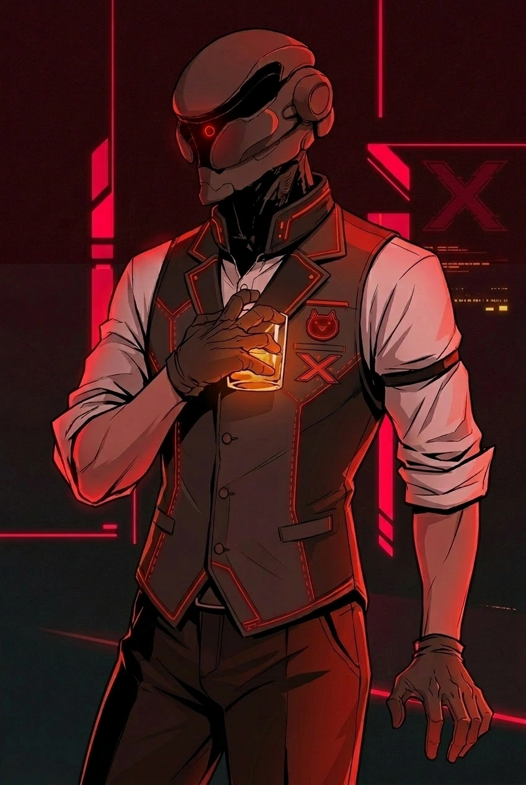
Себастьян Кроу
Главный бармен и хозяин «Neon Light».
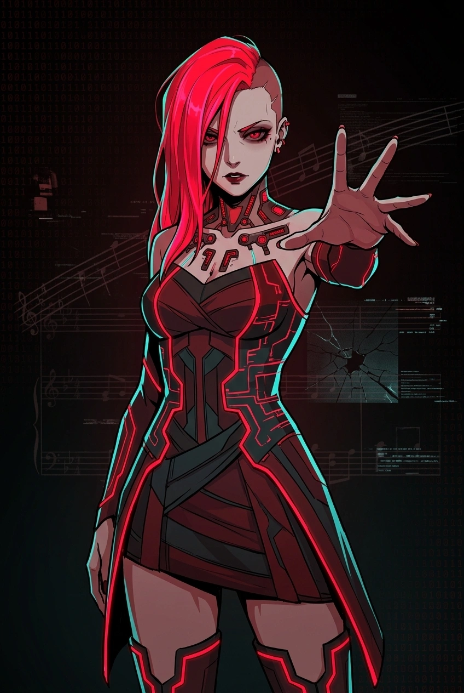
Red Mood (Алиса)
Певица, айдол поколения, выросшего в новой эре.
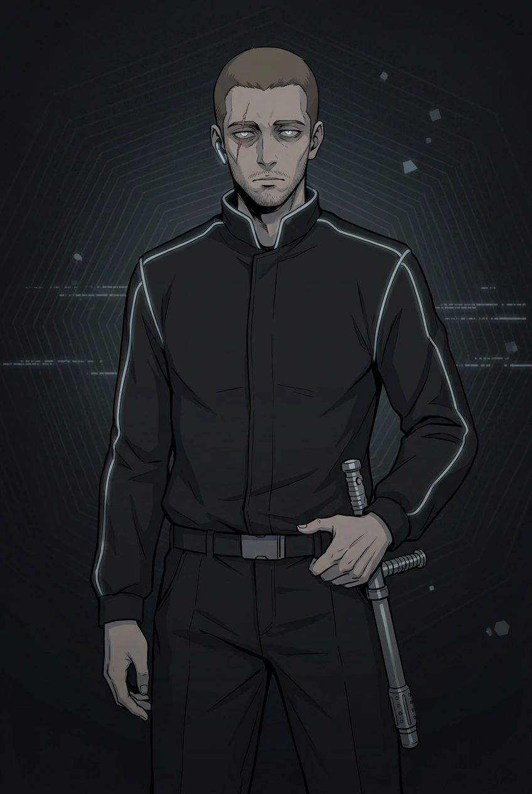
Джон Перри
Охранник «Neon Light», следит за порядком.
СОТРУДНИКИ ПОЛИЦИИ
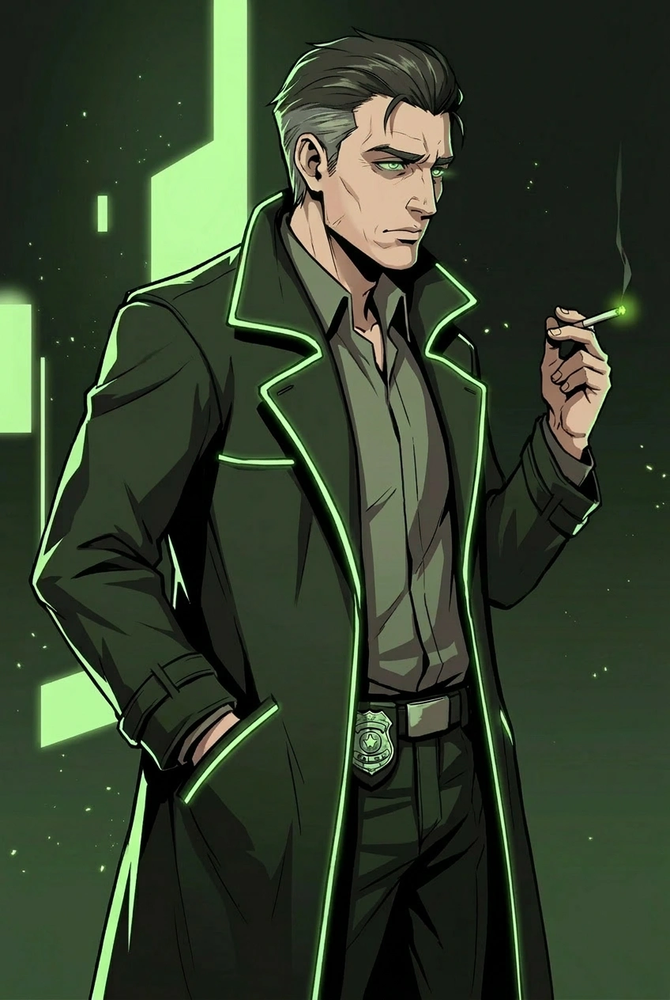
Марк Вейл
Один из наиболее опытных детективов полиции. Назначен на дело «Красного Льда».
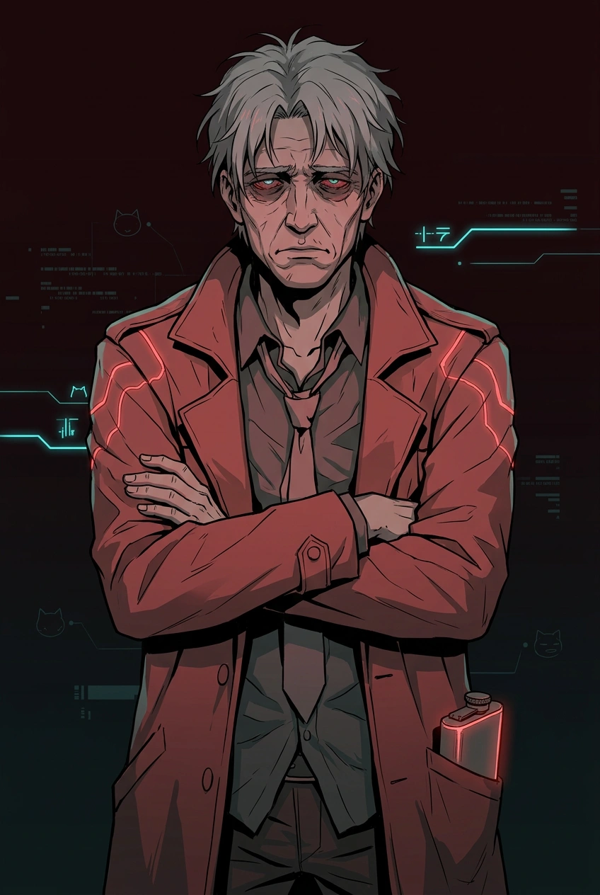
Айда Шен
Капитан полиции, руководитель расследования. Ветеран.
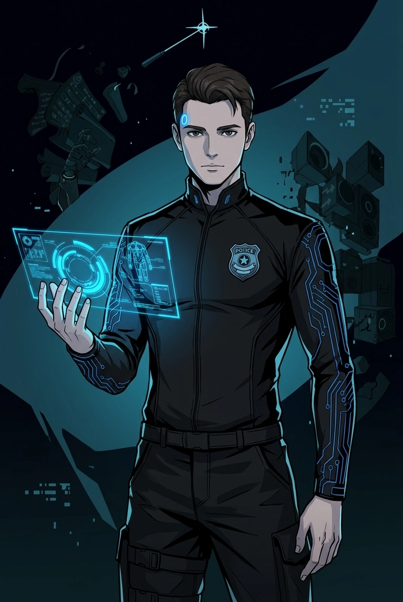
Коннор (RK-800)
Андроид-следователь последнего поколения.
ОСТАЛЬНЫЕ ПОСЕТИТЕЛИ
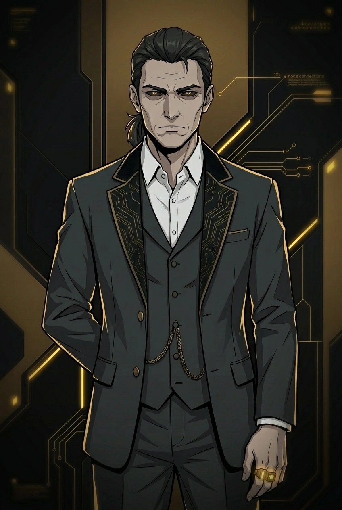
Арчибальд Ванн
Глава NerVektor, влиятельнейшая фигура в мире технологий.
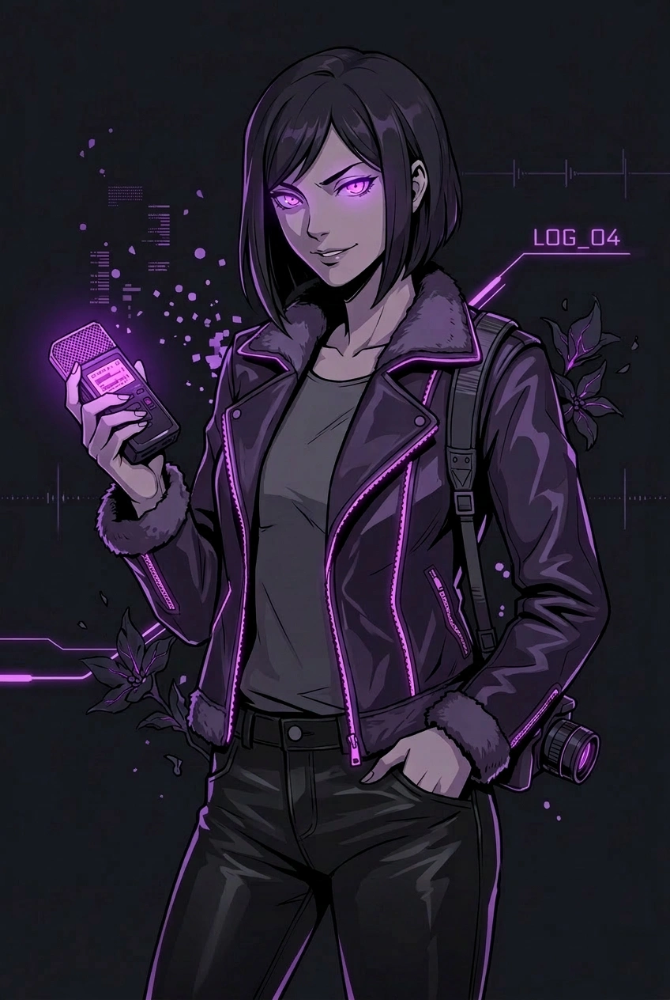
Эрика Соул
Журналист-расследователь.
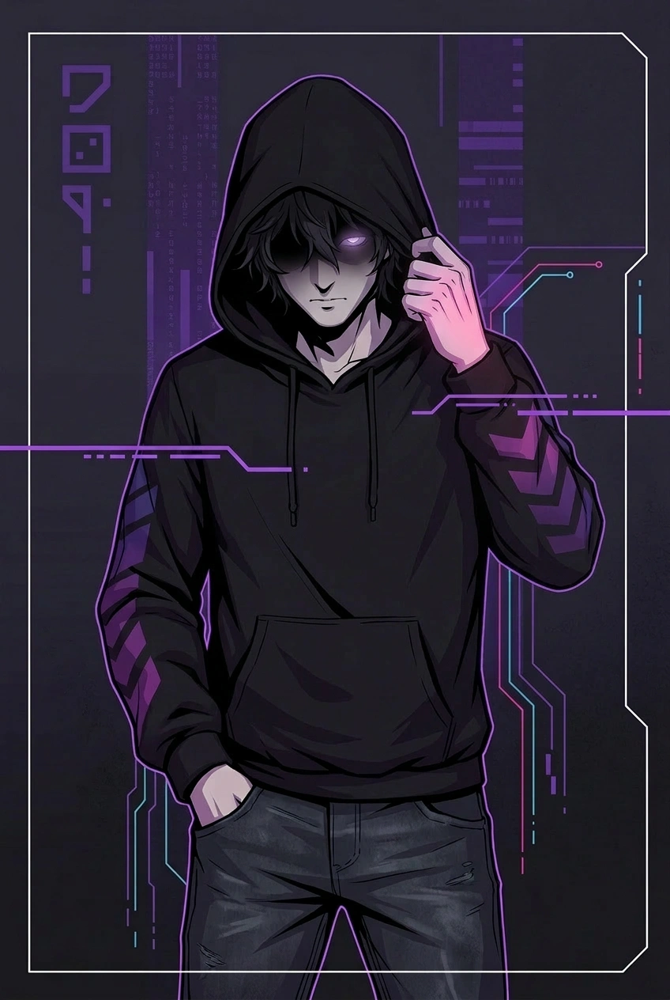
Айзек
Бывший разработчик Оракула.